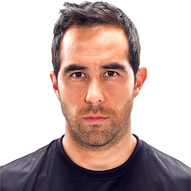

Arturo Vidal
| Primero tenemos a Arturo Vidal que gana un total de US$14,5 millones convirtiendolo en unos de los futbolista mejores pagados |
Alexis Sánchez
 | Alexis Sánchez es el segundo en la lista ganando un total de US $11.5 Millones |
Claudio Bravo
 | Claudio Bravo gana un total de US 3.5 Millones convirtiendose en unos de los terceros de los jugadores Chilenos mejor pagados |
Jorge Valdivia
| Jorge Valdivia gana US $3 Millones siendo el cuarto jugador mejor pagado de la historia de Chile en la actualidad |
Luis Jimenez
 | Luis Jimenez es el quinto jugador mejor pagado en Chile ganando un total de US $2Millones |